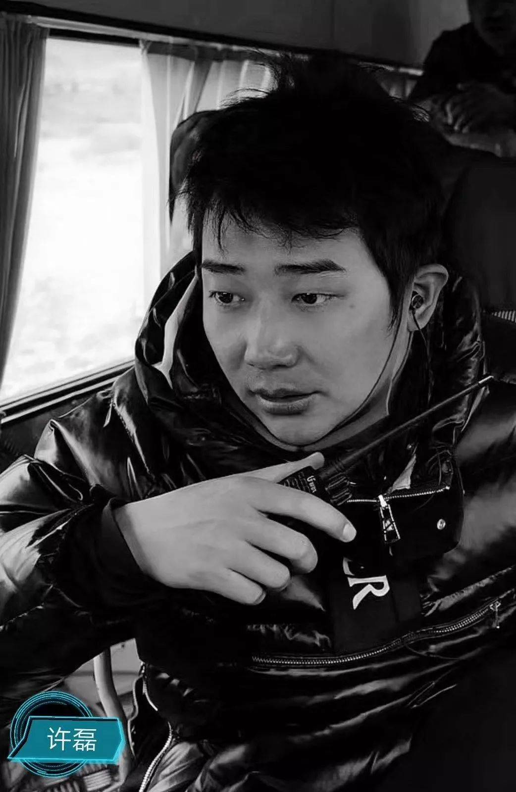
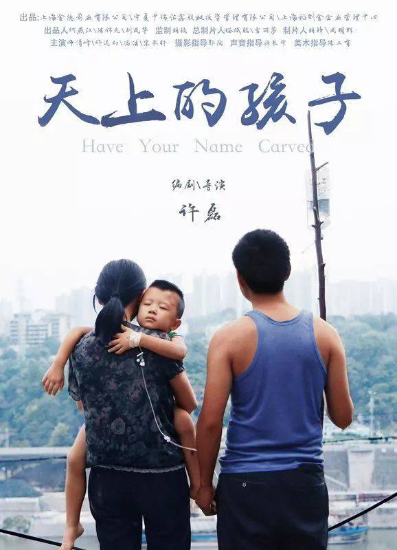
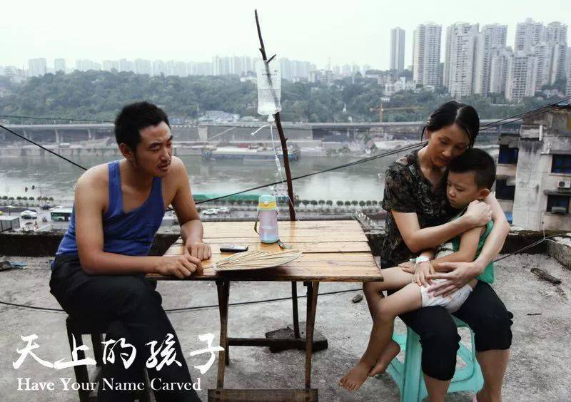
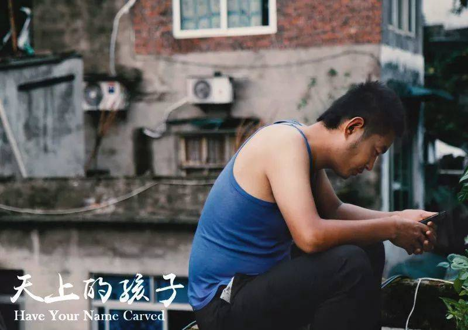
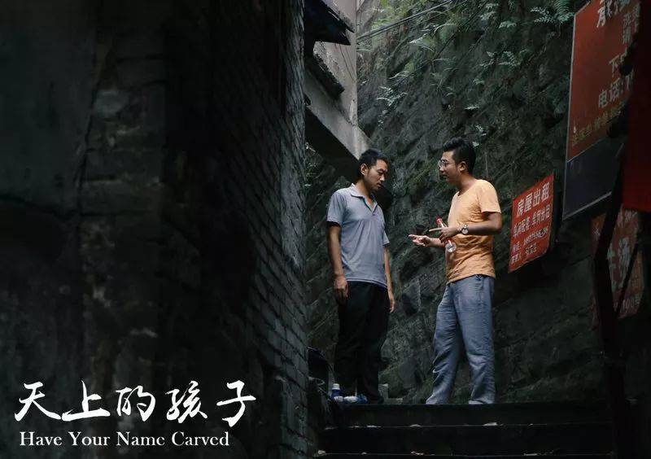
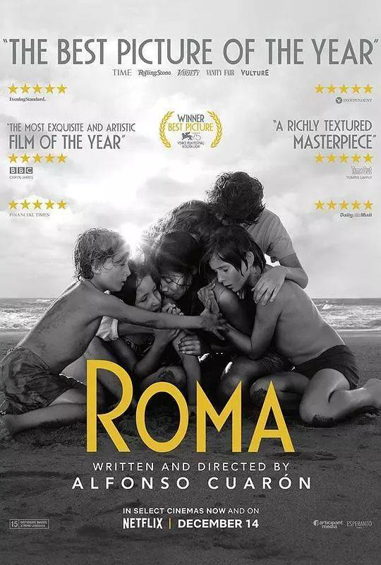

专访导演许磊 | 主题先行 故事为纲 真实做本
Q：据了解，《天上的孩子》取材于现实中的真实事件，您为什么选择拍摄这个事件呢？
A：2014年3月份，许多媒体都报道了《天上的孩子》所取材的那件事。看完那些报道我的第一感觉就是：我一定要把它拍出来，真正有力量的东西是一定能被人感受到的。然后我就开始写剧本，剧本写好就辞职了。当时老板很诧异，但其实我想得很清楚，我要拍电影，别的我干不来。Q：为什么一定要拍电影呢？据了解，您本科曾经是北电表演系的学生，也出演过一些影视作品。
A：是的，读表演期间我会去一些剧组演不大不小的角色，但是时间久了就会感到在剧组里呆着特别无聊。因为大部分是在拍主演，小角色可能一个月里只有半个月是出工的，剩下的半个月就被荒废了。在这期间，我开始尝试写作。另一方面，随着时间推移，我的表演方式发生了变化，最后变成了表演没有任何痕迹的那种风格，但这个时候再去接一些戏，就和别人要求的略微夸张的表演方式产生矛盾，后来渐渐对这种限制产生排斥和抵触情绪，最后就觉得表演不适合我，决定做自己专注和认可的事情。我没毕业就退学，第二年又考了北电的导演系，从本科开始读。本科期间一直在思考《天上的孩子》的剧本，毕业第二年就拍了我的处女作。 Q：做演员的经历，有为您的导演工作带来帮助吗?
A：这个带给我的优势就是：我能更好地去控制演员，把演员调成一个不在演的状态。比如说《地久天长》就很有趣，虽然王源在大众的眼中更多的是小生的形象，但是在这部电影里，有了王小帅导演的帮助，他呈现出来的人物是自然的。我觉得表演的秘密就像阿尔·帕西诺（Al Pacino）曾经在采访里提到的——尽量不去演。我希望参演我的电影的演员都能有这种质的升华，能感受到表演的魅力、电影的魅力。毕竟剧本再硬，如果演员表演得不够真实，观众也不会相信的；反而，如果演员演得足够真实，就可以弥补其他方面的很多缺憾。Q：创作《天上的孩子》期间，您有遇到什么挑战和困难吗？
A： 我在开始做这件事情之前就已经想好我要解决的问题：一是剧本，二是资金，三是团队。 剧本我可以拿时间去磨；资金我很早就做了准备，我把这个故事讲给我的导师胡玫导演以后，她就说资金这块我不用考虑了，她会做我的监制。 团队方面，因为电影不是一个人的作品，它不像绘画、音乐这些艺术，只要能力够强，完全可以靠一己之力完成，所以做电影需要团队，而且团队里的主创要和自己的电影理念和电影价值观一致。大家需要都朝着一个相同的明确的方向努力，才能共同呈现一部整个团队都认可的好的电影。这个圈子现在涌进来无数人，作为导演，需要从中挑出一部分出色的人，让他们跟着我一起干。我用了三年时间写剧本。但是这三年的时间我不是只写剧本，还去接很多的活，就是为了历练我的团队，告诉他们什么是电影，能够让大家有真正的相同的电影理念。 我认为作为青年导演，一定要提前考虑到处女作是最难的。因为第一部作品能否打动别人是非常重要的，这对后面的路影响很大。就像在拍《青玉》之前，我和金基德导演是没有任何交情的，他不过是偶然间看完《天上的孩子》后，觉得不错，就通过助理联系我，还把《青玉》交给我来拍。 Q：有一些声音会说《天上的孩子》也可以拍成一部纪录片，您怎么看待这种说法呢？
A：好的导演会通过控制演员和剧情，吸引观众去相信他所表现的情景就是现实。真实和演戏是两码事，但是当把电影的质感控制到一定高度的时候，它会越来越接近生活，越来越像纪录片，但其实真的是演员演的。Q：能谈谈您最近拍摄完成的《青玉》这部影片吗？
A：这是我的第二部片子，这部片子讲的是一个寓言故事，属于魔幻现实主义的题材。随着经济的发展、时代的进步、文明的进化，人类共同面临的问题是对“价值”的疑惑，这部片子就是从宏观的角度去思考和追寻当今时代的“真正的价值”。 编剧和监制都是韩国的金基德导演，他确定了片子的灵魂和主题；而我作为导演，更多的是通过影像的手段，去深化和突出他要表达的东西。 Q：您刚才提到魔幻现实主义，您是如何看待这个题材的呢？《天上的孩子》可以被划归到这个题材吗？
A：魔幻现实主义很真实，但真实之外也会有虚假的成分，当从主题切入又遇到现实无法解决的问题时，就想到求助于魔幻现实主义。比如《幸福的拉扎罗》，就是一部真正的魔幻现实主义的影片。这部片子非常优秀，导演很清楚自己要表达的是什么。我觉得不论拍什么题材，导演一定要非常清楚自己的主题，只有有了明确的主题，故事才能不散、才能有灵魂。 《天上的孩子》是一部纯现实主义的作品，容不得半点虚假。现实主义的优势是它的题材永远不会过期。就像看了杨德昌导演的《一一》，才知道什么是那个年代真实的台湾，看了它的《牯岭街》，才知道那个年代台湾的青少年是怎样的，这就是现实的力量。Q：您作为一名青年导演，在和金基德导演这样经验丰富的导演合作期间，有什么深刻的感触吗?
A：我觉得这段经历对我的提升非常大。因为金基德导演很早就已经洞悉了电影的本质，洞悉了人性的本质；他拍电影是非常简单直接的，电影于他而言，就是把他想表达的情感准确鲜明地表达出来，资金只是他的电影里很小的一个变量因素。如果现有状态表达不了，需要资金介入，那就资金多一点；如果能表达，资金就可以少点，资金的多少并不会影响他的表达。所以我觉得他是很纯粹的在做电影的人，这种对电影的态度和我的想法不谋而合。 Q：您刚才谈到资金，您是怎么看待资本与电影之间的关系的呢？
A：我觉得资本的进入是一件好事，但重点是如何去利用资本，只有让它们在合适的地方发挥作用，才能算是成功的合作。资本在我看来是可以大的，但是不能让它成为拍电影的负担。本质上来说，资本是为了让导演能拥有更多的发挥空间，它可以提高电影的美学，充裕电影的周期；但是处理不好的话，就会更多的变成枷锁。所以好电影和高投资并不是冲突的，重点是要做好二者之间的协调。 我认为当资本大量的投入以后，影片自然就会变成商业片，所以是没有文艺片和商业片的划分的。一部影片有了大的商业运作，我们就给它贴上商业片的标签；没有这种大的资本运作和商业运作，投资很少，大家就会把它划入文艺片的范畴。比如说《心迷宫》，现在看这是一部很纯正的文艺片，但是如果投入大量的资金，它很有可能会变成一部非常出色的商业片；而《药神》如果使用小成本的拍摄方式，则会是一部非常真实的文艺片。Q：但现在有一些声音是通过作者性的体现程度来定义文艺片与否，您怎么看待这种说法？
A：这更多的是应该从题材和类型上去区分。我认为影片有两种类型：一种偏向于自我表达，导演更喜欢表达属于自己的画面和镜头；另一种是我所偏爱的注重叙事的类型，就像达内兄弟（Dardenne brothers）和克里斯蒂安·蒙吉（Cristian Mungiu）那样。 不论电影的表层是如何体现的，最终的灵魂还是要归于叙事。对于青年导演，也许可以容忍他的前三部作品充满自我表达，但随着不断成长，自我态度和审视就需要被包含进叙事里。即使一部电影可能只是讲了一个简单的故事，但只要观众能从故事里看到导演的态度、想要表达的主题，那它就是完整的。当然电影毕竟是在大荧幕上展示，如果能够把美学添加进去，就会是锦上添花的效果，比如去年的《罗马》，就是一部从主题到美学表达都相对完美的作品。 Q：现阶段，您在电影上追求的目标是什么呢？
A：我希望每一部电影都可以保持自己的品质。它可以是低成本，其实我的这两部电影都没有什么钱；也可以在美学上粗糙一点。但是没有关系，把要表达的明确地表达出来，主题鲜明，让观众看了心里知道我讲了怎样的故事，想要传达怎样的情感，对我来说就够了，这个是最重要的灵魂。如果投资四五亿，但我却不知道要表达什么，观众看完也云里雾里，那我宁可不去拍这部电影。毕竟导演的每一部作品都会像纹身一样，在身上永远抹不掉，洗都洗不干净，对吧？采 访 手 记
采访期间，导演无数次地提到“主题”、“故事”、“真实”。无论是做导演还是拍电影，明确的奋斗目标都是导演首先解决掉的问题；故事，世上的经历数不胜数，通过接受那些缤纷多彩的故事，我们得以体味不同的人生，然后成长；真实的力量是无穷无尽的，但也是充满悲伤的。因此我想，魔幻现实主义的出现，或许是因为现实的生活过于绝望，苦苦寻觅终究不得出口，所以才想要通过魔幻，去创造希望，记录希望，带来希望